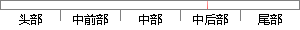

个人信息展示页面如图5.
片段位置图

相似结果|
相似片段 1：系统。登录成功后看到的页面如下图5.21所示，这是对应于管理员的系统首页。图 5.21 系统首页面点击系统用户管理菜单，会出现如下的页面信息，如图5.22所示。在该页面右上角存在三个按钮：首页、个人信息
相似片段 2：个人信息查询页面如图3-9所示，个人信息修改页面如图 3-10所示。图 3-9 个人信息查询页面35图 3-10 个人信息修改页面对于用户来说看到的是几个页面之间的跳转，但对于程序员来说，在跳转到
相似片段 3：下的“个人信息"菜单，进入个人信息展示页面，展示内容如下：姓名、工号、登录账号、工作证照片、性别、出生日期、岗位、职级、手机号码、工作电话和电子邮箱，如图5．31所示；2、点击右下角的修改按钮，跳转到
相似片段 4：零部件详细信息59展示页面如下图 5.7所示。图 5.7 零部件详细信息展示5. 零部件在线询价当进货商点击“点此询价”超链接后，用户可登陆到在线询价的表单中，表单中需填写好所要订购的零部件的个数
相似片段 5：系统的个人信息修改页面如图5．8所示。图5．8个人信息修改页面5．3．7在线测试在线测试模块是针对一般用户即教师实现的，主要包括个人信息填写页面、随机抽题页面、测试试卷页面三个页面。下面介绍了三个
|
※ 片段修改建议 ※
近似词参考：- 展示：展现
系统自动生成语句：个人信息展现页面如图5.
注：本片段修改建议为系统自动生成，仅供参考。